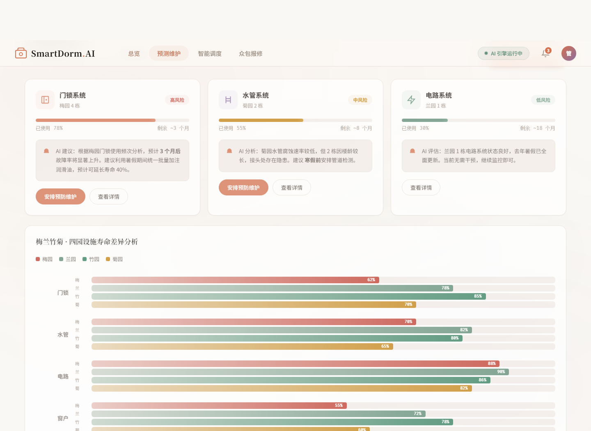
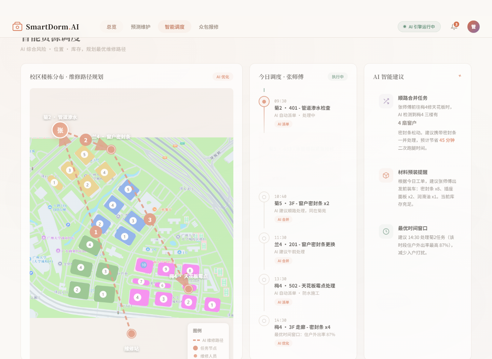
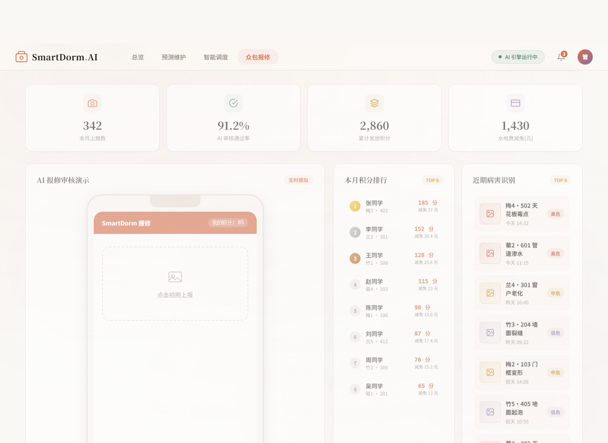
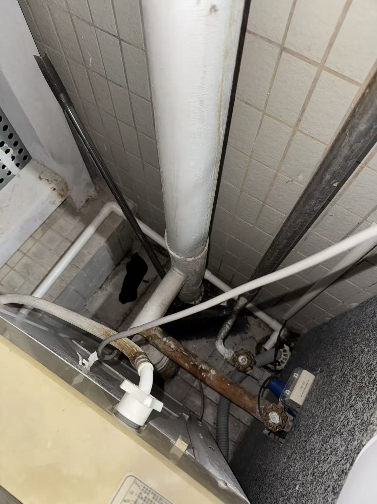

最早发现故障的人，往往没有足够顺手的反馈入口。
Guangzhou University Dorm Facility Management
我设计的 AI 宿舍设施运维 Demo
从广州大学宿舍设施管理中的维修响应慢、问题追踪弱、学生参与度低出发， 我用 Codex 辅助开发了一个可交互的 SmartDorm.AI 系统原型。 它把报修、识别、预测、派工和反馈串成一条清晰的运维链路。
01 / Project Background
宿舍问题很多，但核心往往卡在“运维不到位”
在项目调研中，我们发现宿舍设施老化、维修反馈不透明、报修效率不稳定等问题并不是孤立存在的。 真正影响体验的，是问题从发现到维修完成之间缺少更高效的数据连接和协同机制。
紧急程度、位置和照片质量没有被快速结构化。
任务分散，路线和材料准备依赖经验判断。
维修完成后，数据没有充分反哺下一次预测和调度。
Design Thinking
我的设计思路：让维修流程从左到右被看见
我没有只做一个报修入口，而是把学生、AI、维修人员和管理者放进同一个闭环里。
发现
学生拍照、系统监测或管理者巡检，形成带位置和类型的初始线索。
识别
AI 判断问题类型、照片质量、严重程度，并给出可信度和初步建议。
排序
结合设施寿命、楼栋热力、历史工单，把真正紧急的问题排到前面。
派工
按任务位置、人员状态、材料库存规划维修路线，减少重复跑动。
沉淀
维修结果回流成数据，为下一次预测维护和资源配置提供依据。
System Demo
Demo 的四个页面：分别解决一段运维链路
这里不只是展示界面，而是把每个页面为什么存在、服务谁、解决什么问题讲清楚。

02 / Predictive Maintenance
预测维护：从“坏了再修”前移到“提前发现”
通过设施寿命、楼栋差异和历史问题，提前判断哪些区域更需要检查，让维修人员有计划地处理隐患。
进入该模块

Crowdsourced Maintenance
众包维修是我最想强调的参与机制
宿舍里的问题，学生往往最早知道。我的设计不是让学生承担维修工作， 而是让他们用最轻的方式提供线索：拍照、定位、上传，后续由 AI 和维修人员完成审核与处理。
342 本月上报
91.2% AI 审核通过
2860 累计积分
查看众包报修 Demo
SmartDorm 报修
85 分

管道生锈
AI 审核通过
置信度 92.3%
建议派发至阳台管道维修队列，优先级：中度。
Built With Codex
用 Codex 把设计想法快速做成可交互 Demo
这个 Demo 不是停留在概念图上。我把功能设想、界面结构和交互逻辑拆给 Codex， 再不断调整页面、模块和文案，让它成为一个可以点击、可以演示、可以讲清楚设计价值的系统原型。
Idea
Prompt
Prototype
Demo
Final Demo
让宿舍维修更及时、更可见、更可协同
进入完整系统 Demo，查看总览、预测维护、智能调度和众包报修的交互效果。
打开 SmartDorm.AI 系统 Demo